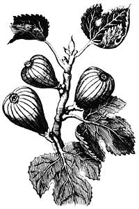

HARVEST
A guide to houseplants on the cheap
At our farmer's market,my friend had found among the offerings of a Lebanese fish seller a confection made from the fruit of the tamarind. Looking somewhat like large raisins rolled in crystallized sugar, they had a pleasant, tart taste, and each had a big, shiny, odd-shaped seed in the center. To my dismay, my friend was spitting the seeds onto the sidewalk. My own seeds were going carefully into my pocket.
"What are you going to do with them?" my friend asked.
"Plant them."
He laughed. He is used to the somewhat odd habits of a seed scrounger. He knows me for one who is forever digging treasures out of the kitchen trash.
I don't know that this is such a strange idea. Why throw away those lovely seeds when all that's needed to turn them into beautiful greenery is a little potting soil? An orange pit, for example, or one from a grapefruit or lemon, will make a small, pretty tree when grown in a pot, and a crushed orange leaf has one of the sweetest smells this side of a sprig of lilac. If you can get the tree to bloom, the flowers will perfume an entire house.
A few seeds dug out of a fig or a kiwi fruit produce interesting, fast-growing plants. A planted carrot-top on a windowsill instantly becomes a fernlike growth, surprisingly attractive for so humble a thing.
Curiosity and a desire for something a little different in houseplants enter into this, too. What does a pomegranate tree look like, or a tamarind?
Combine all this with an element of parsimony. After all, having eaten the fruit, the seed is free. With commercially grown plants commanding handsome prices, green thumbs can be put to good use developing alternatives to the expensive, pedestrian offerings available in most plant shops.
A dedicated seed scrounger must be prepared to fail occasionally. I've never been able to get a banana seed or those of cactus fruits to grow, nor have I been able to sprout a coconut. Of course, the coconut isn't really the proper project for a seed scrounger anyway, since you have to sacrifice the whole nut-which means you get nothing to eat.
For a while it seemed the tamarind seeds were going to be a failure. In spite of my determined efforts to sprout them, they lay as inert as so many shiny black pebbles. Some I cooled, some I washed in hot water. Some I kept in the dark, some in light. Some were planted in seed-starter mix, some in Perlite and some were kept on a moist paper towel in a petri dish. Nothing happened. Luckily, I had plenty of seeds with which to experiment.
Digging around in the horticultural section of the public library to see what I could find about tamarinds (nothing, I came across an article about sprouting seeds which suggested hard seed coats be nicked with a small file. I applied this technique to some of my tamarind seeds, not so easily done, since they are marvelously smooth and slippery. In about a week, the nicked seeds showed signs of root development.
Then there was the problem of determining what sort of soil would suit them. I tried three: a heavy loam; a loose, sandy mixture for growing cactus; and a mixture of about three parts general-purpose potting soil to one part Perlite. I planted two sprouted seeds in each type. The seeds in the loam rotted. In the sandy soil, they came up thin and unhealthy-looking. But in the potting-soil mixture they grew nicely, producing elegant seedlings looking somewhat like the mimosa (also known as "the sensitive plant"). Though not sensitive to the touch, the leaves fold up tightly at night.
The tamarind ( Tamarindus indica ), I have since discovered, is a very large tree in its native tropical African habitat, reaching about 75 feet at maturity. Fortunately, mine seem to be in no rush to get there and have made satisfactory houseplants without outgrowing my ability to find big enough pots for them. Nor do I see any need to cut holes in the roof.
There are some general rules. First of all, germination rates are often low, so it's a good idea to start with a lot of seeds whenever possible. And you'll have to be satisfied with foliage most of the time. Any notion I might have had of growing kiwi fruit for the table was dashed by the discovery that kiwis most often have male and female flowers on different plants, that plants grown from seed are most often male, and that they must be quite large-far beyond the capacity of my window ledge-before they flower at all.
Almost all seeds sprout more readily in the spring than in the fall. This is particularly important in the stone-seeded fruits like peach and apricot, and less necessary with tropical varieties like papaya. Sometimes a seed can be fooled into thinking spring has arrived if it is kept in the freezer a few days, then thawed out, but some seeds will be killed by this harsh treatment.
Keeping seeds disease-free gets them off to a good start. For seeds of moderate size, I line a petri dish with a circle of paper towel moistened with water that has been boiled and cooled to room temperature to approximate sterile conditions. With this technique, I can put seeds in a variety of conditions and observe them carefully for signs of growth. (Because I happen to have a botanist in the family-who does not care to soil her hands in horticulture-I can easily get petri dishes whenever I need them. For those lacking home botanists, a moistened paper towel inside a small plastic bag makes an acceptable petri dish substitute, though it's a little harder to observe the developments.)
Very large seeds, like the mango, or very small ones, like the fig, get planted directly into a sterilized commercial seed-starting mix in a flat covered with plastic wrap. These are transferred to permanent homes as soon as the first true leaves appear.
Most of the plants seem happy in a good, general-purpose potting soil and benefit from regular applications of a complete fertilizer.
Not all seeds are equally suited to pot culture. Cane fruits, for example-raspberries and their kin-don't do well at all for me. Strawberries, on the other hand, can be grown to fruit on a sunny windowsill. The main difficulty with strawberries, amenable as they are to almost all soil types, is picking out the tiny seeds before succumbing to the urge to eat the berries.
The following are some projects that novice seed scroungers might like to try:
( PERSEA AMERICANA )
A GOOD SEED FOR NOVICES TO begin with. The traditional method involves peeling away the seed coat and piercing the seed with tooth picks to hold it, flat side down, partially submerged in a glass of water until root growth is apparent, then planting. However, the seed can be placed directly in soil, leaving about half of it exposed. It should be kept moist but not soggy and away from direct sun until the plant is well developed. Avocados have large, elliptical leaves sometimes reaching a foot in length. They normally grow tall without branching. Bushier growth can be induced by pruning. About the time the plant is six inches high, cut it back to two leaves, and prune the new growth as desired.
( MOST COMMON VARIETIES )
THE GRAPEFRUIT IS THE EASIEST TO grow. Seeds should be soaked in a cup of hot water overnight; then planted in compost-rich soil. The plant will do best in a deep pot with plenty of room for root development. Citrus foliage is dense with glossy evergreen leaves that have a marvelous smell when crushed. Stiff, sharp thorns grow along the older branches of the small trees, which require considerable pruning to keep them within bounds. The flowers are very fragrant, but seeds grown from commercial fruit will not flower as readily as the dwarf varieties developed especially for pot culture. Try chilling a three- or four-year-old tree slightly by taking it outdoors in the fall when the nights are cool, but don't overdo it: They freeze readily.
( COFFEA ARABICA )
IF YOU CAN GET YOUR HANDS ON A raw bean or two, this is worth a try. Unfortunately, all the beans in the supermarket are roasted, but you can sometimes beg a few raw ones from small specialty shops that roast their own. Keep the seeds very warm for germination-about 86°F. A small bush with glossy leaves, the coffee plant likes a loose, sandy soil and warm, moist, sunny conditions.
(PHOENIX DACTYLIFERA)
GROWING A PALM TREE FROM A date seed is an exercise in patience. The seeds are extremely slow to sprout, and their growth rate is equally slow. Make sure the seed you have is not from a pasteurized date-those seeds are dead-and be prepared to wait two to six months for first signs of growth. The sprout resembles a rough corn shoot and the first leaves are long, corrugated blades. Subsequent leaves gradually assume the divided, fanlike form of the palm. Surprisingly, for a plant we think of as belonging in deserts, dates require plenty of water and a humid environment. They tend to get brown, dry tips on the leaves in the arid atmosphere of the average home. Provide good drainage and feed well
( FICUS CARICA )
A WIDE VARIETY OF CULTIVARS ARE grown for fruit. I have had best success with the dried white Greek figs often sold strung and tied in a circle. The fig is a bush or small tree, with large rough leaves shaped somewhat like maple leaves. Fast-growing, figs become too big too soon, therefore, slow, managed growth is preferable. The seeds are tiny and have to be teased out of the sticky fruit. They should be washed free of stickiness and dried a day or so, then planted directly into a seed-starting mix. Germination rates are poor, so start with several seeds, preferably from more than one fruit.
( VITIS )
ANY ONE OF THE SEEDED TYPES IS suitable and will produce a fast growing vine with lobed, tooth-edged leaves which can reach up to six feet within 18 months. Wash the seeds thoroughly and allow them to dry overnight. Keep them in the dark during germination and gradually move the seedlings into brighter light. Pruning a young plant back to a quarter of its length when it is seven or eight inches high will encourage stronger leaf development and root growth. Give it something to climb on. Grapes love moisture and warmth.
( PSIDIUM )
THOUGH OFTEN RECOMMENDED AS a houseplant, I found the guava disappointing-a leggy bush with sparse, uninteresting foliage. It has the advantage of being able to fruit in pot culture, which might offset its unimposing form and its tendency to shed its leaves at the slightest excuse. Wash guava seeds in warm water, or soak them for a couple of hours, changing the water several times. Plant immediately in soil. Germination can take up to a month, but may take only half that time.
( ACTINIDIA CHINENSIS )
KIWIS ARE SLOW TO GERMINATE AND the seedlings will sit around for months before developing their first true leaves. However, they make up for the slow start by remarkably fast growth once they get going. Perhaps too exuberant to make good potted plants, the fuzzy vines will need constant pruning to keep them from taking over the house. The older leaves have a tendency to dry around the edges, but they can be removed and will be rapidly replaced with new growth. Kiwi seeds need to be stratified: that is, kept in a cool, moist environment for about two months. I have found, however, that seeds from supermarket fruits that have been held in cold storage grow fairly well without this treatment. Grow the plant in full sun and give the vine support.
( MANGIFERA INDICA )
MANGOS ARE RELATED TO POISON ivy, so if you're sensitive, handle the fruit with care. The enormous seed looks sturdy but is actually rather fragile with a short shelf life. Few of the fruits we get in the market have viable seeds. The ones I was able to get to grow came from abroad via a returning tourist Editor's note. Check US. customs laws b fore bringing food into the country, but if you find a fruit in the supermarket that looks fresh and is particularly fragrant, it's worth a try. Peel off the seed's hairy outer covering and plant it, eye up. Just barely cover it with loose soil. Keep it warm and thoroughly moist (though not dripping wet) until germination. Often, a number of shoots will appear from one seed. Remove all but the sturdiest. The young leaves are red, changing to glossy green as they mature. The growth habit is similar to that of the avocado, and pruning produces a nice-looking plant. The mango needs evenly warm temperatures: A sudden chill may kill it.
( PRUNUS PERSICA )AND
( PRUNUS PERSICA V. NECTARINA )
LEAVES ARE GLOSSY GREEN, LANCE shaped and long-pointed. The leaves usually have glands at the base that secrete a fluid attractive to ants and other insects, so you might want to think twice about using peaches for houseplants. Peaches do best in well drained, loose, sandy soil and need heavy feeding.
Crack the stone with nutcrackers carefully to avoid smashing the seed, and plant the seed four inches deep. Keep warm and out of the light until shoots appear in two weeks.
( PUNICA GRANATUM )
WASH THE SEEDS THOROUGHLY AND let dry. Pomegranates need a warm place and about two weeks to germinate. The leaves are a bright, shiny green, about 2-1/2 inches long; the branches are long and thin and will get tangled and droopy if not pruned back from time to time. Though a sizable tree when grown naturally, pomegranates can be dwarfed (with a corresponding reduction in leaf size by growing in a small, shallow container and allowing the soil to get quite dry from time to time (but not to the point where plants wilt. The slender branches can be trained, bonsai-like, to form a pleasing shape. Grow them in a south window if you can; pomegranates like it sunny and warm. A chill or draft will cause them to lose their leaves, but the plant will recover quickly if the chill isn't too severe.
YOU MIGHT LIKE TO TRY A FEW scrounged non-seed items as well. The pineapple (Ananas comosus) will produce exotic tropical foliage with long, stiff, strap-shaped leaves up to 20 inches in length, armored with thorns along the edges. Cut the top off a fresh pineapple about three-quarters of an inch below the crown and allow it to dry for a day; then plant it in loose, acidic soil up to the crown. A mixture of half sand, half peat moss works well. Pineapples are members of the bromeliad family, so their roots serve mainly to support the plant; most nutrients are taken in through the leaves. Periodic misting of the leaves and once-a-month leaf feeding with half-strength all-purpose fertilizer will help to induce good growth. Pineapples have been brought to bloom and fruit in pot culture. They should be ready to flower about the time they're two years old and have 30 or so leaves. (It's said that the presence of apples helps induce flowering. That sounds a bit like witchcraft, and unfortunately, before I had a chance to try it out, my pineapple-a magnificent specimen in my own unprejudiced opinion-fell victim to a greenhouse accident that also froze the mango.
The sweet potato( Ipomoea batatas ), a relative of the morning glory, used to be every kid's horticultural project. In modern times, most of the ones on the grocer's shelf are treated with hormones to prevent sprouting, and therefore won't grow. If you dig around in the bins, however, you may find one that was missed, showing a few dark, usually withered sprouts near the top. Take that one home. Run a long skewer through the whole tuber, and suspend it half submerged in water until root development is apparent. Plant in a mixture of one-third sand and two-thirds potting soil. The sweet potato has a trailing habit, and is a rampant grower.
A recent introduction to my collection is ginger ( Zingiber officinale ). A small lump of fresh ginger root was sprouted in Perlite and then planted in general-purpose potting soil. Several sprouts have appeared, but so far the results have been disappointing. The young plants resemble a large coarse grass, have dry brown tips and don't seem extraordinarily interesting. I'll give it a while to prove itself. Maybe I haven't found the conditions it likes yet-and in the dead of winter, all greenery is welcome.
Seed scrounging is largely an experimental enterprise. One works with seeds about which, as often as not, there is little information. Local horticultural experts are not much help in situations such as this. "You want to grow a what?" they say. "I've never heard of it." Horticultural books rarely mention the kinds of seeds a scrounger comes up with. The best source book I've found so far is Jack Kramer's The Pit'n Pot Growers Book Thomas Y. Crowell Co., out of print.
Meanwhile, there's always something new to try. I've been thinking about olives. Pickled ones obviously won't do, but occasionally shops that specialize in Mediterranean foods have the fat, black ones dried without salt. Maybe they would grow.
Or litchi nuts. This is truly virgin territory. Dried ones won't work. Once a litchi has dried, that big seed inside is dead. But a search of the stores next summer may turn up one fresh enough to grow. For a seed scrounger, the hunt is half the fun.
Leslie Gadallah is a science fiction writer living in Winterburn, Alberta, Canada.
|
|
|
|
|
 |
|
|
|
|
|
|